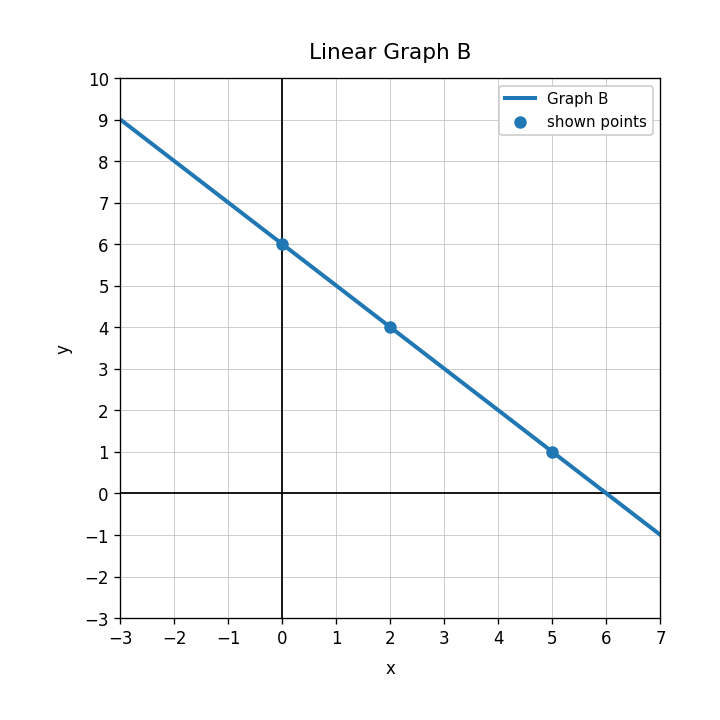
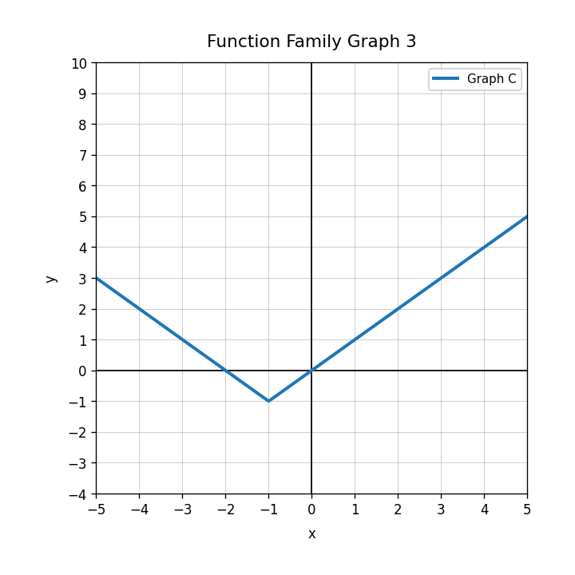
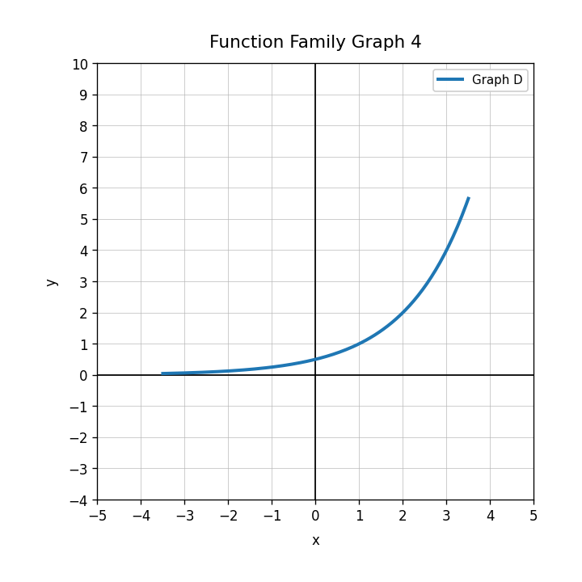
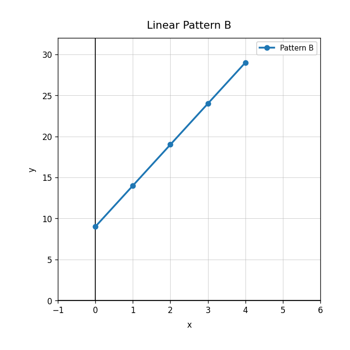

Use Graph B. Write the equation of the line.

A phone plan costs $18 plus $12 each month. Let $m$ be months and $C$ be total cost. What should each variable represent?
Write an equation for this linear relationship.
| weeks | 0 | 2 | 4 | 6 |
|---|---|---|---|---|
| dollars | 20 | 36 | 52 | 68 |
For the model $C=7m+15$, explain what the 7 and 15 could mean in a subscription context.
Use the graph shape to identify the function family.

Which function family often has a U-shape?
Classify $y=2^x$ as linear, quadratic, absolute value, or exponential.
Is $y=4x-9$ linear or nonlinear?
Classify each equation as linear or nonlinear: $y=4x-2$, $y=|x|+1$, $y=x^2$.
Use the graph. Identify the function family and one visible feature.

Compare how a linear table and an exponential table grow. What should you look for?
Create four cards: one linear equation, one quadratic equation, one absolute value equation, and one exponential equation. Explain one feature that would help sort each card.
Use Pattern B. How many tiles are added each step?

State the constant change in the sequence $3, 8, 13, 18$.
A savings account increases by $45 every 3 weeks. Determine the rate in dollars per week.
A table increases by the same amount each time the input increases by 1. Explain why this is evidence of a linear relationship.